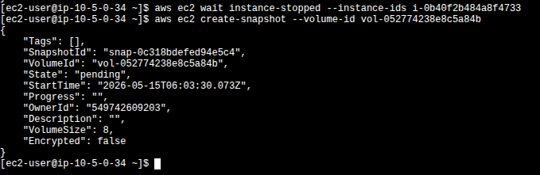

Summary
The lab combines four tasks. Tasks 1–2 set up the S3 bucket / IAM role and run the manual and scheduled EBS snapshot flow. Tasks 3–4 (the challenge) cover the S3 sync cycle with versioning, including recovering an object after a delete marker is created.
EBS Snapshot Automation
Take an initial point-in-time snapshot of the Processor's EBS volume, then schedule
recurring snapshots with cron and retain only the last two using a Python
script.
S3 Sync with Versioning
Enable versioning on a bucket, sync a local directory, propagate deletes with
--delete, and recover the deleted object from its previous version.
What This Proves
That aws s3 sync --delete does not destroy data when versioning is on — it
creates a delete marker. The previous version remains accessible by
VersionId.
Task 1 — Bucket + IAM role for the Processor
Setup task: create the S3 bucket that the challenge will use and grant the Processor instance the permissions it needs to talk to EBS and S3.
Create the S3 bucket
A general-purpose S3 bucket was created in the lab's default region. The chosen name
was superbucket3k, used throughout the rest of the lab as the sync
target. Versioning was left disabled at this point — it gets enabled
later in Task 4, just before the sync that requires recovery.
Attach the S3BucketAccess role to the Processor
The lab pre-creates an IAM role named S3BucketAccess. From the EC2
console, Actions → Security → Modify IAM role on the Processor
instance attached this role as an instance profile. Without this step, the AWS CLI
running on the Processor would not have credentials to call S3 or describe its own
EBS volume.
aws s3 and aws ec2 commands. An instance profile lets the
CLI pick up temporary credentials from the EC2 metadata service — no keys on disk, no
rotation problem.
Task 2 — Initial EBS snapshot from the CLI
Connect to the Command Host via EC2 Instance Connect, identify the Processor's EBS volume, stop the instance to guarantee a clean snapshot, take the snapshot, and start the instance again.
Discover the volume + instance IDs
Two describe-instances queries with JMESPath filters returned the
VolumeId and the InstanceId of the Processor. These values are
the inputs for every subsequent EBS call.
aws ec2 describe-instances \
--filter 'Name=tag:Name,Values=Processor' \
--query 'Reservations[0].Instances[0].BlockDeviceMappings[0].Ebs.{VolumeId:VolumeId}'
aws ec2 describe-instances \
--filters 'Name=tag:Name,Values=Processor' \
--query 'Reservations[0].Instances[0].InstanceId'
Actual IDs returned in this run: volume vol-052774238e8c5a84b, instance
i-0b40f2b484a8f4733.
Stop · snapshot · start
Stopping the instance before create-snapshot guarantees the filesystem is
flushed. The wait sub-commands are blocking and return only when the resource
reaches the target state, which makes the flow scriptable.
aws ec2 stop-instances --instance-ids i-0b40f2b484a8f4733
aws ec2 wait instance-stopped --instance-id i-0b40f2b484a8f4733
aws ec2 create-snapshot --volume-id vol-052774238e8c5a84b
aws ec2 wait snapshot-completed --snapshot-id snap-0c318bdefed94e5c4
aws ec2 start-instances --instance-ids i-0b40f2b484a8f4733
create-snapshot immediately after the instance reaches the
stopped state. The new snapshot snap-0c318bdefed94e5c4 is reported
in pending; wait snapshot-completed would block on the next
line until it reaches 100%.
Task 3 — Scheduled snapshots + retention script
The lab installs a one-minute cron entry to generate snapshots automatically,
then uses a Python script (snapshotter_v2.py) to keep only the two most recent
ones per volume.
Schedule recurring snapshots
The cron entry redirects both stdout and stderr to /tmp/cronlog so the job
runs silently while still leaving a trail for debugging. After installing the job, a single
describe-snapshots call against the volume confirms that new snapshots show up
every minute (one completed, one pending in the capture).
echo "* * * * * aws ec2 create-snapshot --volume-id vol-052774238e8c5a84b 2>&1 >> /tmp/cronlog" > cronjob
crontab cronjob
aws ec2 describe-snapshots --filters "Name=volume-id,Values=vol-052774238e8c5a84b"Retention with snapshotter_v2.py
Once enough snapshots accumulate, the cron job is removed with crontab -r and
snapshotter_v2.py is run. The script uses boto3 to enumerate all
volumes in the account, sort the existing snapshots by start_time, and delete
anything beyond the most recent MAX_SNAPSHOTS. Only the script's relevant
structure is shown below — the full code is on the Processor, not transcribed here.
#!/usr/bin/env python
import boto3
MAX_SNAPSHOTS = 2 # keep only the last 2 per volume
ec2 = boto3.resource('ec2')
for v in ec2.volumes.all():
v.create_snapshot()
snapshots = list(v.snapshots.all())
if len(snapshots) > MAX_SNAPSHOTS:
snap_sorted = sorted(
[(s.id, s.start_time, s) for s in snapshots],
key=lambda k: k[1]
)
for s in snap_sorted[:-MAX_SNAPSHOTS]:
print("Deleting snapshot", s[0])
s[2].delete()
The script also creates a snapshot on each run before pruning. That is the source
of the new snap-080e659fbfaea38f1 visible in the post-execution list.
snap-0eeb6..., snap-0c318..., snap-0dc06...).
After python3.8 snapshotter_v2.py, two are deleted and the post-run list
shows the survivors: the oldest kept one plus the new snapshot the script itself took.
Task 4 — Challenge: S3 sync with versioning
Switch hosts: this task runs on the Processor instance (which now has the
S3BucketAccess role). The goal is to sync a local files/ directory with
s3://superbucket3k/, delete a file locally, propagate the delete to S3, and
then recover the deleted object using S3 versioning.
Sample files + enable versioning
The sample files.zip was already pre-staged on the Processor. After
unzip files.zip the working directory contained:
$ unzip files.zip
Archive: files.zip
inflating: files/file1.txt
inflating: files/file2.txt
inflating: files/file3.txt
$ ls
cronjob files files.zip get-pip.py snapshotter_v2.py
$ ls files
file1.txt file2.txt file3.txtVersioning was enabled on the bucket before any sync — this is the critical ordering, because objects uploaded while versioning is off cannot be recovered later.
aws s3api put-bucket-versioning \
--bucket superbucket3k \
--versioning-configuration Status=EnabledThe command returns nothing on success, which is correct AWS CLI behavior for idempotent configuration calls.
Initial sync
A plain aws s3 sync uploaded the three files. aws s3 ls
confirmed the bucket state.
$ aws s3 sync files s3://superbucket3k/files/
upload: files/file1.txt to s3://superbucket3k/files/file1.txt
upload: files/file2.txt to s3://superbucket3k/files/file2.txt
upload: files/file3.txt to s3://superbucket3k/files/file3.txt
$ aws s3 ls s3://superbucket3k/files/
2026-05-15 06:12:49 30318 file1.txt
2026-05-15 06:12:49 43784 file2.txt
2026-05-15 06:12:49 96675 file3.txtDelete locally · propagate with --delete
file1.txt was removed from the local files/ directory and a
second sync was run with the --delete flag. Without
--delete, aws s3 sync is upload-only and would have left the file
in S3.
$ rm files/file1.txt
$ ls files
file2.txt file3.txt
$ aws s3 sync files s3://superbucket3k/files/ --delete
delete: s3://superbucket3k/files/file1.txt
$ aws s3 ls s3://superbucket3k/files/
2026-05-15 06:12:49 43784 file2.txt
2026-05-15 06:12:49 96675 file3.txtaws s3 ls only shows the latest version
of each key. Because versioning is enabled, the bucket has not actually lost
file1.txt — the delete added a delete marker as the newest
version. The original object is still there, hidden behind it.
Inspect versions · list the delete marker
list-object-versions returns two parallel arrays. Versions[]
contains the actual content versions; DeleteMarkers[] contains the tombstone
entries. After the propagated delete, file1.txt has one of each:
aws s3api list-object-versions \
--bucket superbucket3k \
--prefix files/file1.txtVersionId: xyHef1ZSWB5VCgi4HR6917ssBs2uWoYh) and the delete marker
(VersionId: F0kqOy0eIMZPQ3DCkWE8ThPR28YN7T1I). The delete marker has
IsLatest: true; the real version has IsLatest: false.
Captured VersionIds from this run, used in the next step:
| Type | VersionId | Effect |
|---|---|---|
| version | xyHef1ZSWB5VCgi4HR6917ssBs2uWoYh |
Original content of file1.txt. Recoverable. |
| marker | F0kqOy0eIMZPQ3DCkWE8ThPR28YN7T1I |
Tombstone created by sync --delete. Hides the version but does not destroy it. |
Recover the previous version · re-sync
There is no single "restore" call in S3; the workflow is to download the previous
version by VersionId straight to the original local path, then sync again so
the bucket sees a new latest version.
$ aws s3api get-object \
--bucket superbucket3k \
--key files/file1.txt \
--version-id xyHef1ZSWB5VCgi4HR6917ssBs2uWoYh \
files/file1.txt
$ ls files
file1.txt file2.txt file3.txt
$ aws s3 sync files s3://superbucket3k/files/
upload: files/file1.txt to s3://superbucket3k/files/file1.txt
$ aws s3 ls s3://superbucket3k/files/
2026-05-15 06:18:12 30318 file1.txt
2026-05-15 06:12:49 43784 file2.txt
2026-05-15 06:12:49 96675 file3.txt
Notice the new LastModified on file1.txt:
06:18:12 instead of the original 06:12:49. The bucket now has
three "live" objects again, plus the historical version chain underneath.
get-object returns metadata
(VersionId, ContentLength: 30318, ETag,
ServerSideEncryption: AES256). After it, ls files shows the
three files locally and aws s3 sync re-uploads file1.txt.
Key concepts
Three ideas that the lab cements through hands-on commands rather than theory.
Incremental snapshots
Each EBS snapshot is a point-in-time, restorable view of the whole volume, but
internally only changed blocks are stored after the first one. Deleting old snapshots
is safe — AWS re-references blocks so the surviving ones remain complete. That is what
makes a retention policy like MAX_SNAPSHOTS=2 reasonable.
aws s3 sync · with vs. without --delete
Plain sync is one-way add/update: it only uploads new or changed
files. With --delete, it also removes objects from the destination that no
longer exist at the source — making the bucket a true mirror of the local directory.
On a versioned bucket, that "remove" is actually a delete marker.
Delete markers vs. real deletes
With versioning enabled, every DELETE against an object just stamps a new
"version" of type delete marker as the latest. The previous version stays
intact and is recoverable by its VersionId. The only way to actually erase
data is to delete the underlying version, not the key.
Instance profile > static keys
Attaching S3BucketAccess to the Processor as an instance profile lets the
CLI fetch short-lived credentials from the EC2 metadata service. No
aws configure, no keys on disk, no rotation logic. Every AWS CLI call in
Tasks 3–4 used those temporary creds.
S3 versioning lifecycle (this lab in 4 states)
sync:
file1.txt exists with a single version. IsLatest: true.
rm + sync --delete: same content version still exists
(IsLatest: false) plus a new delete marker
(IsLatest: true).
get-object --version-id: file restored locally. Bucket unchanged yet.
sync: new content version pushed (IsLatest: true),
delete marker pushed down, original version still in the chain.
Command reference
Quick scan of every CLI verb used in this lab, grouped by phase.
| Phase | Command | Purpose |
|---|---|---|
| EBS discovery | aws ec2 describe-instances --filter ... --query ... |
Resolve VolumeId / InstanceId by tag. |
| EBS lifecycle | aws ec2 stop-instances · wait instance-stopped |
Quiesce the volume before snapshotting. |
| EBS snapshot | aws ec2 create-snapshot --volume-id ... |
Take a point-in-time snapshot. Async — returns pending. |
| EBS wait | aws ec2 wait snapshot-completed --snapshot-id ... |
Block until the snapshot is 100% available. |
| EBS inspection | aws ec2 describe-snapshots --filters "Name=volume-id,Values=..." |
List snapshots associated with a volume. |
| Scheduling | crontab cronjob · crontab -r |
Install / remove the recurring snapshot job. |
| S3 setup | aws s3api put-bucket-versioning --versioning-configuration Status=Enabled |
Activate versioning so deletes become recoverable. |
| S3 sync | aws s3 sync <local> s3://<bucket>/<prefix>/ [--delete] |
One-way mirror; --delete propagates local removals. |
| S3 listing | aws s3 ls s3://<bucket>/<prefix>/ |
Only shows the latest version of each key. |
| S3 versioning | aws s3api list-object-versions --prefix ... |
Lists both Versions[] and DeleteMarkers[]. |
| S3 recovery | aws s3api get-object --version-id ... <out> |
Download a specific historical version of a key. |